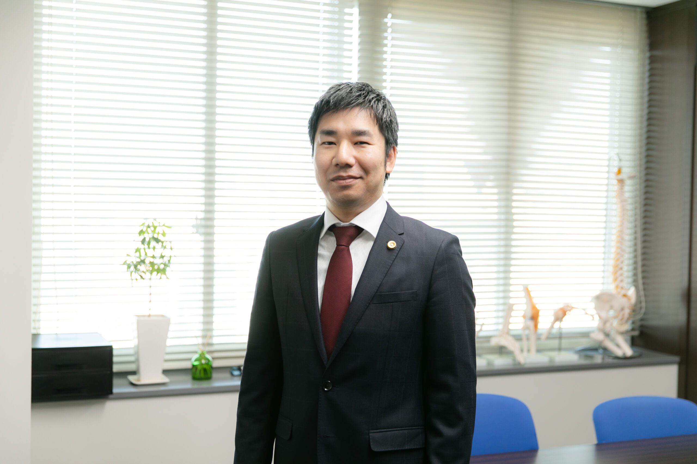
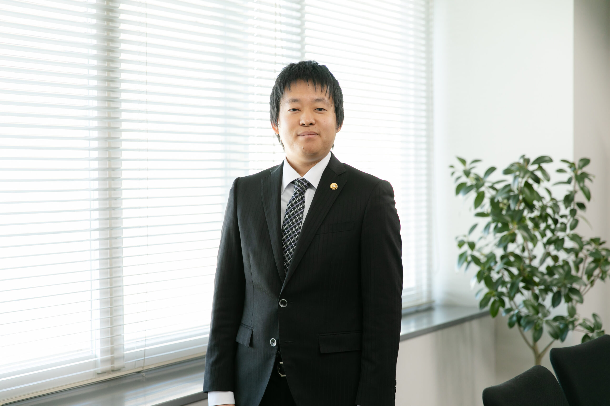

弁護士法人ふくい総合法律事務所のご紹介
| 事務所名 | 弁護士法人ふくい総合法律事務所 |
|---|---|
| 代表弁護士 | 小前田 宙（こまえだ ひろし） |
| 所在地 | 〒910-0005 福井県福井市大手3丁目14番10号 TMY大名町ビル5階 |
| 電話番号 | 0776-28-2824 |
| FAX | 0776-28-2825 |
| 予約受付 | 9:30〜20:00（土日祝も対応） |
| 相談時間 | 9:30〜17:00（夜間・土日祝応相談） |
| アクセス | 福井駅から徒歩7分・無料駐車場あり |
| 対応エリア | 福井県全域（福井市・坂井市・鯖江市・越前市・敦賀市 等） |
弁護士3名・事務職員5名のチーム体制で、依頼者の話をじっくり聞き、
的確かつ迅速なリーガルサービスを提供いたします

1983年生まれ｜福井県丹生郡越前町出身
ゴルフ、スノーボード（スキージャム勝山）

1981年生まれ｜島根県松江市出身
プロ野球観戦、将棋

旅行（47都道府県制覇済み）
プライバシーに配慮した個室の相談室をご用意しています

個室の相談室

キッズスペース完備

事務所入口
福井駅から徒歩7分。無料駐車場もあります。
JR福井駅 西口より徒歩約7分
無料駐車場を備えています。お車でお気軽にお越しください。
秘密厳守。相談したからといって、依頼する必要はありません。
まずはお電話・LINEで相談予約をお取りください。
予約受付：9:30〜20:00（土日祝も対応）／ 相談時間：9:30〜17:00（夜間・土日祝応相談）
お名前・ご希望日時をお伝えいただくとスムーズにご予約いただけます
初回相談無料・秘密厳守｜ご予約受付中